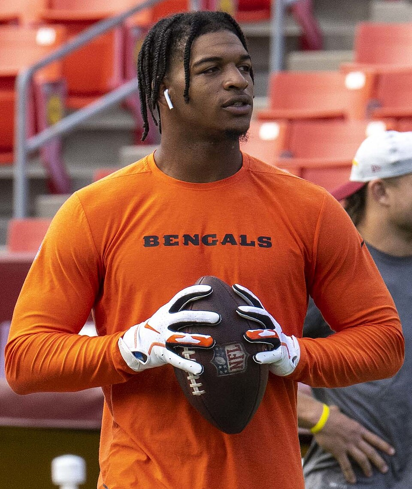

Bengals Week 5:
Good Golly
Joe Burrow threw four touchdowns to four different receivers in Miami, Ja'Marr Chase came back from a concussion to catch a 45-yarder one-handed, and Fox's play-by-play man lost his mind about it. The Bengals are 3-2 going into the bye.

Ja'Marr Chase: All-Pro Reels / CC BY-SA 2.0

Bengals 31, Dolphins 24
Four touchdowns, four receivers
Dohnte Meyers returned the opening kickoff 81 yards to the Miami 10, and three plays later Joe Burrow found Mike Gesicki for a 4-yard touchdown. In the second quarter he hit Samaje Perine from six yards and Tanner Hudson from two, and Jordan Battle intercepted Malik Willis on back-to-back Miami drives. Cincinnati led 21-7 at halftime.
Burrow finished with 190 yards and four touchdowns, each to a different receiver. That is a modest yardage total for a four-touchdown day, and the week before he threw for 428 and lost, so we will take this trade every time. He has 11 touchdown passes in five games.
Miami scored 14 in the fourth quarter. Willis cut it to seven with a quarterback sneak, the onside kick went out of bounds, and the Bengals ran it out. Zac Taylor said afterwards that the bye "comes at a great time, for us to be 3-2," and Burrow said there were "some dumb mistakes" to fix before Baltimore in week 7.
Ja'Marr Chase
The catch, and the call
A week earlier Chase was pulled down by the facemask against Jacksonville and left with a concussion. He missed practice, cleared the protocol, and played. Late in the third quarter Burrow threw deep, Chase came down with it one-handed in the end zone, and it was 28-10.
Fox had Eric Collins on play-by-play. He is the Charlotte Hornets' television voice and was calling only his second NFL game, and his reaction is the best thing anyone has said about a Bengals touchdown this season. Yahoo transcribes it as "Ja'Marr Chase, you're kidding! ... Good golly!" It is better heard than read, and the link is below.
Chase finished with six catches for 77 yards. The touchdown was his fourth of the season and the 58th of his career, and the yards moved him past Isaac Curtis into third on the Bengals' all-time receiving list. He belongs to geauxjack, whose computer drafted him at 1.3, which remains the best decision a computer has made in this league.
In this league
Every Bengal, and every Dolphin
Burrow scored 25.60 at quarterback for TheSoop, who lost anyway. The Bengals defence scored 14.00 for derrek777, who claimed it for $1 after TheSoop dropped it for the Raiders, who scored 2.00. We have raised this with TheSoop.
KnightRider_85 had five players in this game, more than any manager in the league. Ollie Gordon scored 17.30, Malik Washington 10.60, Riley Patterson 3.00 and Chase Brown 6.50, all in his lineup, and Malik Willis scored 22.38 on his bench despite the two interceptions to Battle. It was the week the Willies beat geauxjack for the first time, so he will not mind that the Bengals beat his quarterback.
Mike Gesicki caught one of the four touchdowns and has four this season, 48.40 points in five games. He is a free agent in this league. Cincinnati is on bye, so he is a week 7 pickup rather than a week 6 one.
Watch and read